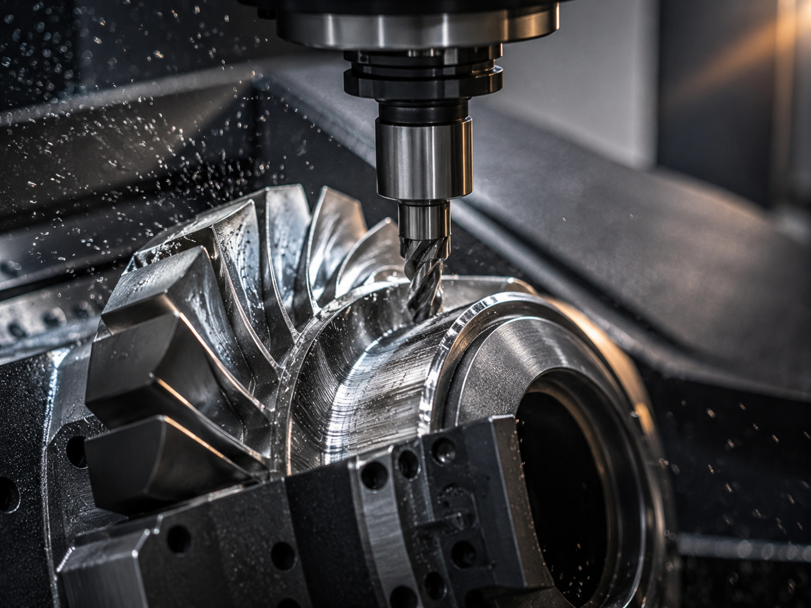
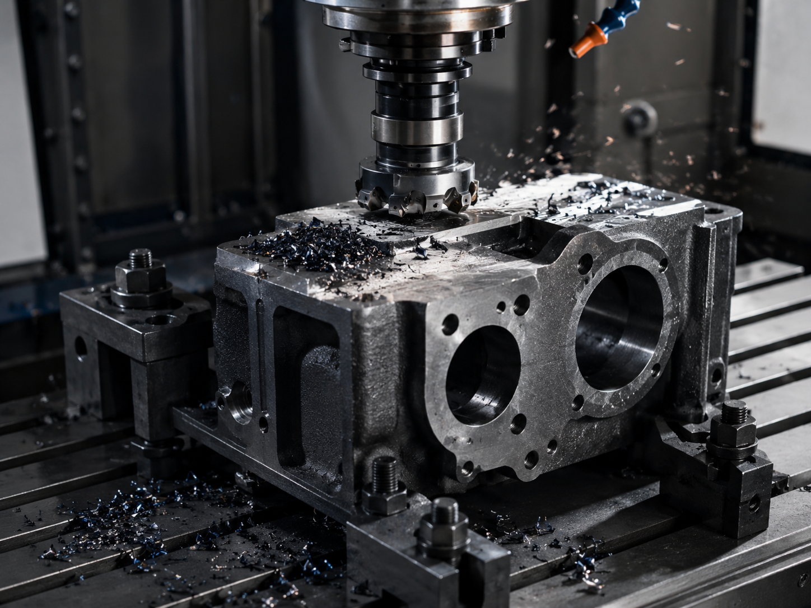

CNMG vs WNMG: which insert is better for roughing steel?
For roughing steel, CNMG is usually the safer first choice when the setup needs a strong edge and stable clamping. WNMG can be efficient when you...
Read article →Short, practical guides for carbide insert codes, end mill selection, coatings, quotations and OEM supply.
For roughing steel, CNMG is usually the safer first choice when the setup needs a strong edge and stable clamping. WNMG can be efficient when you...
Read article →
Start with a sharp edge, suitable coating, enough chip space and conservative feed. Stainless steel work-hardens easily, so rubbing is usually wo...
Read article →
Send the tool code, quantity, workpiece material and current cutting problem first. A clear model list is better than a long message with no size...
Read article →Most chipping problems come from an edge that is too weak, unstable clamping, too much vibration, or cutting parameters that make the insert rub ...
Read article →
For steel and stainless drilling, TiAlN or AlTiN is usually a better starting point than TiN when heat is high. TiN is still useful for general w...
Read article →Use the ISO code as the starting point, then confirm chipbreaker, grade, coating and application. The same code can still cut very differently wi...
Read article →
Quote by the exact insert code and cutter body whenever possible. APKT and APMT can look similar in search terms, but seating, screw and geometry...
Read article →PVD is often preferred for sharper edges and stainless finishing. CVD is often used for steel and cast iron when heat resistance and wear resista...
Read article →